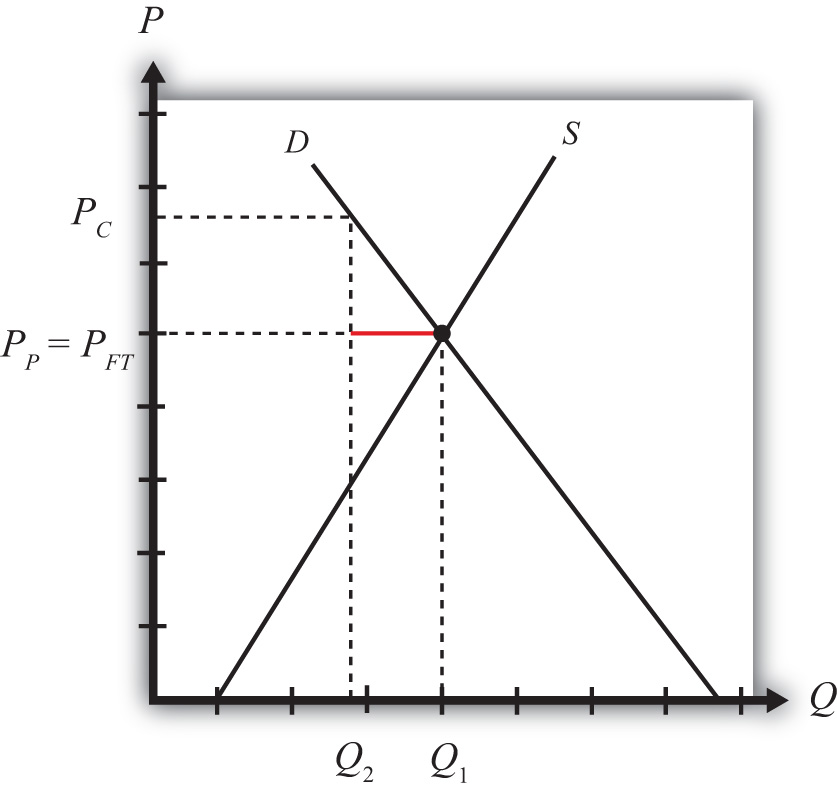

This section will show how a consumption tax can cause trade for a small, perfectly competitive, open economy. In other words, even if countries were identical with respect to their resource endowments, their technology, and their preferences and even if there were no economies of scale or imperfectly competitive markets, a purely domestic policy, such as a consumption tax, can induce trade between countries.
Consider a small open economy with a perfectly competitive industry. Let the domestic market be represented by the supply and demand curves in Figure 8.3 "Inducing Exports with a Domestic Consumption Subsidy". Suppose initially that free trade is allowed with the rest of the world, but by coincidence (actually by assumption), let the free trade price be exactly equal to the autarky price for the good. This is shown as the price, PFT. At that price, both supply and demand equal Q1, and thus no imports or exports occur, even though there is free trade.
Figure 8.3 Inducing Exports with a Domestic Consumption Subsidy
Next, suppose that the government of this country imposes a specific (per unit) consumption tax on this product. Let the tax rate be set at “t.” This means the government will collect “t” dollars for every unit of the good sold in the domestic market, regardless of whether the product is produced domestically or imported.
The tax will raise the domestic consumer price of the good by the full amount of the tax to PC and reduce domestic demand to Q2. Domestic producers will not be affected by the consumption tax since continued competition in free trade with firms in the rest of the world will allow them to continue to charge the world price of PFT. Note that in a closed economy, the producers would absorb some of the tax burden by lowering their price so as to maintain the profit maximum. However, being open to trade implies that the country can purchase as much as it likes at the world price. This means that the producer price PP will remain equal to the free trade price PFT, and the full burden of the tax falls on consumers. Thus PC = PFT + t and PP = PFT.
Since the tax has no effect on the producer price but raises the consumer price, domestic demand falls to Q2 while domestic supply remains at Q1. The difference, Q1 − Q2 (the length of the red line), represents the amount exported to the rest of the world. This implies that the consumption tax will induce exports of the good. Thus this is an example in which a domestic policy (a consumption tax) can cause trade (i.e., exports) to occur.
Jeopardy Questions. As in the popular television game show, you are given an answer to a question and you must respond with the question. For example, if the answer is “a tax on imports,” then the correct question is “What is a tariff?”